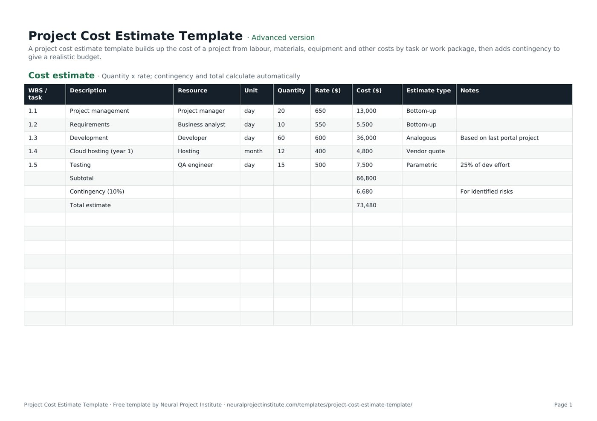

Templates · Finance & estimating
Free Project Cost Estimate Template (Excel, Google Sheets, PDF)
This free project cost estimate template builds up your project cost line by line from your work breakdown structure: quantity x rate for each resource, the estimating method used, a subtotal, contingency and a total. Download it in Google Sheets, Excel or PDF at beginner, advanced or expert level, with no sign-up.

Key takeaways
- A project cost estimate predicts what the work will cost; the approved estimate becomes your budget and cost baseline.
- The template calculates each line as quantity x rate, then adds a subtotal, 10% contingency and a total (edit the percentage to suit your risks).
- An Estimate type dropdown records how each line was estimated: bottom-up, analogous, parametric, three-point or vendor quote.
- Base contingency on the risks in your risk register rather than a habitual percentage.
- Early estimates are ranges, not single numbers; refine the estimate as the scope becomes clearer.
Free download · no sign-up
Get the project cost estimate template
Pick your level and format: Google Sheets, Excel or a print-ready PDF. Spreadsheets include dropdowns, formulas and sample rows you can overwrite.
What is a project cost estimate?
A project cost estimate is a forecast of the money needed to complete a project's work. It lists the resources each task or work package needs (people, materials, equipment, services), multiplies quantity by rate, and adds contingency for known risks. Once approved, the estimate becomes the project budget and cost baseline.
Estimating is not a one-off event. You usually produce a rough figure for the business case during initiation, then a more detailed, bottom-up estimate during planning once the work breakdown structure exists. Each version should be more accurate than the last.
| Document | What it answers | When you use it |
|---|---|---|
| Cost estimate | What will the work probably cost? | Initiation and planning |
| Budget | How much money is approved, and when will it be spent? | After approval, through delivery |
| Cost baseline | What approved, time-phased budget do we measure performance against? | Monitoring and control |
For the methods behind the numbers, see our cost estimation guide.
What is in this project cost estimate template
The template has one tab, Cost estimate, with sample rows for a small web portal project that you overwrite with your own lines. Here is a live preview of the advanced version:
| WBS / task | Description | Resource | Unit | Quantity | Rate ($) | Cost ($) | Estimate type | Notes |
|---|---|---|---|---|---|---|---|---|
| 1.1 | Project management | Project manager | day | 20 | 650 | 13,000 | Bottom-up | |
| 1.2 | Requirements | Business analyst | day | 10 | 550 | 5,500 | Bottom-up | |
| 1.3 | Development | Developer | day | 60 | 600 | 36,000 | Analogous | Based on last portal project |
| 1.4 | Cloud hosting (year 1) | Hosting | month | 12 | 400 | 4,800 | Vendor quote | |
| 1.5 | Testing | QA engineer | day | 15 | 500 | 7,500 | Parametric | 25% of dev effort |
| Subtotal | 66,800 |
Sample rows are examples: replace them with your own.
- Cost estimate: WBS / task, Description, Resource, Unit, Quantity, Rate ($), Cost ($), Estimate type, Notes
Columns and formulas
- WBS / task and Description: the WBS code and name of the task or work package.
- Resource: who or what does the work (a role, a supplier, a material, a service).
- Unit and Quantity: how the resource is measured (day, hour, month, item) and how many units you need.
- Rate ($): the cost per unit. Cost ($) calculates automatically as quantity x rate.
- Estimate type: a dropdown with Bottom-up, Analogous, Parametric, Three-point and Vendor quote, so reviewers can see how reliable each line is.
- Notes: assumptions, sources and exclusions for the line.
- Subtotal, Contingency (10%) and Total estimate rows below the line items, all calculated by formula.
Beginner, advanced and expert versions
| Version | What you get | Best for |
|---|---|---|
| Beginner | One tab with five columns: WBS / task, Description, Quantity, Rate ($) and Cost ($), plus the subtotal, contingency and total rows | A quick first estimate or a small internal project |
| Advanced | All nine columns, the Estimate type dropdown and every formula | Most projects; the version to submit for approval |
| Expert | The advanced sheet plus an Instructions tab (steps and tips) and a Revision history tab for version control | Estimates that go through several review rounds or sit in a governance pack |
Every spreadsheet version has a frozen header row and filters, and prints to fit the page width in landscape. The PDF is a print-ready copy for workshops or for filling in by hand.
What to include in a project cost estimate
A complete estimate covers every cost the project will incur, not just the obvious labour. Use the categories below as a checklist when you build your lines; each can be one row or several in the template.
| Cost category | Examples | How to estimate |
|---|---|---|
| Internal labour | Project manager, analysts, developers, engineers, testers | Effort in days or hours x loaded day rate |
| External labour | Contractors, consultants, agencies | Day rate x days, or a fixed quote |
| Materials | Construction materials, hardware, consumables | Quantity take-off x unit price |
| Equipment | Plant hire, test rigs, devices | Hire period x rate, or purchase price |
| Software and services | Licences, cloud hosting, subscriptions | Users or months x price, from vendor quotes |
| Facilities and travel | Venues, site offices, travel and accommodation | Trips or months x cost |
| Training and change | User training, communications, handover | Sessions x cost per session |
| Indirect costs | Overheads your organisation allocates to projects | Agreed overhead rate, if your finance team uses one |
| Contingency | Allowance for identified risks | From the risk register (see below) |
If you buy goods or services, gather quotes with a request for quotation template and record the result as a Vendor quote line. Our guide to project procurement management explains the wider process.
How to fill in the project cost estimate template
- Start from your WBS. List each work package from your WBS template in the WBS / task column. Estimating at work-package level makes it far less likely that you forget work.
- Name the resource and unit for each line. Split a work package into several lines if it uses different resources, for example developer days and hosting months.
- Enter the quantity. Ask the people who will do the work how much effort they need; our effort estimation guide covers techniques for this.
- Enter the rate. Use your organisation's standard day rates for internal staff and quotes for suppliers. Rename the "$" in the column headings if you work in another currency.
- Choose the estimate type. Pick the method you used for each line from the dropdown, so reviewers know which numbers are firm and which are rough.
- Record assumptions in Notes. For example "based on last portal project" or "assumes client provides test data".
- Check the subtotal and set contingency. Change the 10% in the contingency formula to the allowance your risk analysis supports.
- Review the estimate with the team and sponsor. Challenge the biggest lines and the least certain ones first.
- Approve and baseline it. Once approved, copy the figures into your budget template and treat them as the project baseline for cost.
Spreadsheet tips
- Add lines above the Subtotal row. Insert new rows between the last line item and the Subtotal row so the SUM range expands to include them.
- Copy the Cost formula into new lines. Drag the Cost ($) formula down from the row above so each new line calculates quantity x rate.
- Group lines by phase. Use WBS codes (1.1, 1.2, 2.1) and sort or filter by them to see the cost of each phase.
Choosing an estimating method for each line
The Estimate type dropdown reflects the main techniques recognised in PMI's guidance and in most estimating textbooks. Use the most accurate method the available information allows; it is normal for one estimate to mix several.
| Method | How it works | Use it when | Accuracy |
|---|---|---|---|
| Bottom-up | Estimate each small piece of work, then add them up | You have a detailed WBS | Highest, but slowest |
| Analogous | Scale the actual cost of a similar past project | Early on, with little detail but good history | Low to moderate |
| Parametric | Multiply a unit cost by a quantity (cost per square metre, testing as a percentage of development) | The work is repeatable and you have reliable rates | Moderate to high |
| Three-point | Combine optimistic, most likely and pessimistic values | The line is uncertain | Gives a range, not just a number |
| Vendor quote | Use a supplier's written price | You are buying goods or services | High, within the quote's terms |
Three-point estimating example
With the PERT (beta) formula, the expected value is (optimistic + 4 x most likely + pessimistic) / 6. If development could take 45 days at best, 60 days most likely and 90 days at worst, the expected effort is (45 + 240 + 90) / 6 = 62.5 days. Enter 62.5 as the quantity and choose Three-point in the dropdown.
Where you have no history, expert judgment from people who have done similar work is a legitimate input; record whose judgment it was in the Notes column. For large or high-stakes estimates, a Monte Carlo simulation turns three-point ranges into a probability of finishing within budget. Agile teams that estimate in points can convert velocity into cost; see story point estimation.
Project cost estimate example
The sample rows in the template show a small customer portal project. This is how the numbers add up:
| WBS | Line | Quantity x rate | Cost | Estimate type |
|---|---|---|---|---|
| 1.1 | Project management | 20 days x $650 | $13,000 | Bottom-up |
| 1.2 | Requirements (business analyst) | 10 days x $550 | $5,500 | Bottom-up |
| 1.3 | Development | 60 days x $600 | $36,000 | Analogous |
| 1.4 | Cloud hosting, year 1 | 12 months x $400 | $4,800 | Vendor quote |
| 1.5 | Testing (QA engineer) | 15 days x $500 | $7,500 | Parametric |
| Subtotal | $66,800 | |||
| Contingency (10%) | $6,680 | |||
| Total estimate | $73,480 |
- Development is analogous: it is scaled from a previous portal project, which the Notes column records.
- Testing is parametric: 25% of the 60 development days gives 15 days.
- Hosting comes from a vendor quote, so it is the most certain line.
- Contingency covers identified risks only; any management reserve is held separately by the sponsor.
Replace the sample rows with your own lines, keep the subtotal and total rows, and the formulas will do the rest.
How much contingency should you add?
PMI distinguishes two kinds of reserve. A contingency reserve covers identified risks ("known unknowns") and is included in the cost baseline that the project manager controls. A management reserve covers unforeseen work ("unknown unknowns"), sits outside the baseline and usually needs sponsor or management approval to release.
The template's contingency row is the contingency reserve. The 10% in the sample is a placeholder, not a recommendation. A better approach:
- List the cost-related risks in your risk register template.
- For each, estimate the probability and the cost impact if it happens.
- Add up probability x impact (expected monetary value) for the risks you are accepting or only partly mitigating.
- Use that total, sense-checked against similar past projects, as your contingency.
Contingency for a routine project with firm quotes can be modest; a novel project with uncertain scope needs more. A sensitivity analysis shows which lines move the total most, and your contingency plan describes what you will do if a risk occurs.
How accurate should your estimate be?
Accuracy depends on how much you know. Many PMI-based references, citing the PMBOK Guide, describe a rough order of magnitude (ROM) estimate as accurate to about -25% to +75%, and a definitive estimate as about -5% to +10%. Industries such as construction and process engineering use their own estimate classes with different ranges.
| Estimate | Typical stage | Range for a $73,480 estimate |
|---|---|---|
| Rough order of magnitude (-25% to +75%) | Idea or business case | $55,110 to $128,590 |
| Definitive (-5% to +10%) | Detailed planning, scope agreed | $69,806 to $80,828 |
Present early estimates as ranges, state the class, and re-estimate as the scope firms up. This progressive elaboration is normal and protects you from being held to a number produced before the work was understood.
Common cost estimating mistakes
- Estimating top-down only. A single figure for the whole project hides missing work; build from the WBS.
- Leaving out non-labour costs. Licences, travel, training and handover are easy to forget.
- Padding every line. Hidden buffers make the estimate impossible to manage; put risk allowance in the contingency row where everyone can see it.
- Using a fixed contingency percentage. Base it on the risks, not on habit.
- Not recording assumptions. Without them nobody can tell why the estimate changed.
- Never revisiting it. Update the estimate when scope changes through change control.
From estimate to budget and cost control
The estimate is the start of cost management, not the end. Once it is approved, you spread it over time to create a budget, agree how costs will be managed and then track actual spend against it.
- Set out how costs will be estimated, approved and reported in a cost management plan.
- Phase the approved estimate by month in the budget template.
- Track progress and spend with earned value management and act early through cost control.
- Forecast the final cost with an estimate at completion when actuals start to diverge.
If the estimate feeds a funding decision, compare it with the expected benefits in a cost-benefit analysis and summarise it in your project proposal.
Related templates and guides
 Work Breakdown Structure (WBS) TemplateFree work breakdown structure template with WBS codes, levels, deliverables, owners,…Beginner · Advanced · Expert
Work Breakdown Structure (WBS) TemplateFree work breakdown structure template with WBS codes, levels, deliverables, owners,…Beginner · Advanced · Expert Business Case TemplateFree business case template: problem, options, costs, benefits, ROI, payback, risks and…Beginner · Advanced · Expert
Business Case TemplateFree business case template: problem, options, costs, benefits, ROI, payback, risks and…Beginner · Advanced · Expert Request for Quote (RFQ) TemplateFree RFQ template (request for quotation): requirements, quantities, terms, submission…Beginner · Advanced · Expert
Request for Quote (RFQ) TemplateFree RFQ template (request for quotation): requirements, quantities, terms, submission…Beginner · Advanced · Expert Budget TemplateFree budget template with monthly planned vs actual spend, variance and totals for…Beginner · Advanced · Expert
Budget TemplateFree budget template with monthly planned vs actual spend, variance and totals for…Beginner · Advanced · Expert Profit and Loss Statement TemplateFree profit and loss statement template: revenue, cost of sales, gross profit, operating…Beginner · Advanced · Expert
Profit and Loss Statement TemplateFree profit and loss statement template: revenue, cost of sales, gross profit, operating…Beginner · Advanced · ExpertFrequently asked questions
What is a project cost estimate template?
A project cost estimate template is a spreadsheet for forecasting the cost of a project. It lists each task or work package with its resource, quantity and rate, calculates the cost of each line, then adds a subtotal, contingency and total.
Is this project cost estimate template free?
Yes. The template is free to download in Google Sheets, Excel and PDF, at beginner, advanced and expert level, with no sign-up.
How do I use the project cost estimate template in Google Sheets?
Choose the Google Sheets button for your level, then enter your work packages, quantities and rates. The Cost column, subtotal, contingency and total calculate automatically. Insert new rows above the Subtotal row and copy the Cost formula down.
What should a project cost estimate include?
Internal and external labour, materials, equipment, software and services, facilities and travel, training, any indirect costs your organisation allocates, and contingency for identified risks. Record assumptions and exclusions for each line.
What are the main types of cost estimate?
By accuracy: rough order of magnitude, budget and definitive estimates. By method: bottom-up, analogous, parametric, three-point and vendor quotes. The template's Estimate type dropdown records the method for each line.
How accurate should a project cost estimate be?
It depends on the stage. PMI-based references commonly cite -25% to +75% for a rough order of magnitude estimate and -5% to +10% for a definitive estimate. Present early estimates as ranges and refine them as scope becomes clear.
How much contingency should I add to a cost estimate?
Base contingency on the cost impact and probability of the risks in your risk register rather than a fixed percentage. The template's 10% is a placeholder that you can change in the contingency formula.
What is the difference between a cost estimate and a budget?
A cost estimate forecasts what the work will cost. A budget is the approved amount, usually phased over time, that you track actual spending against.
What is a three-point estimate?
A three-point estimate uses optimistic, most likely and pessimistic values. With the PERT formula, the expected value is (optimistic + 4 x most likely + pessimistic) / 6.
Can I use this as a construction or IT cost estimate template?
Yes. For construction, add lines for materials, labour, plant and subcontractors; for IT, add effort by role plus licences and hosting. Our construction project management guide covers sector-specific practice.
Can I turn the cost estimate into a quote for a client?
Yes. Add your margin, tax and payment terms on top of the total, and keep the internal cost estimate separate so you know your real cost.
What is the difference between the beginner, advanced and expert project cost estimate template?
The beginner version has five essential columns on one tab. The advanced version has all nine columns, the Estimate type dropdown and every formula. The expert version adds an Instructions tab and a Revision history tab.